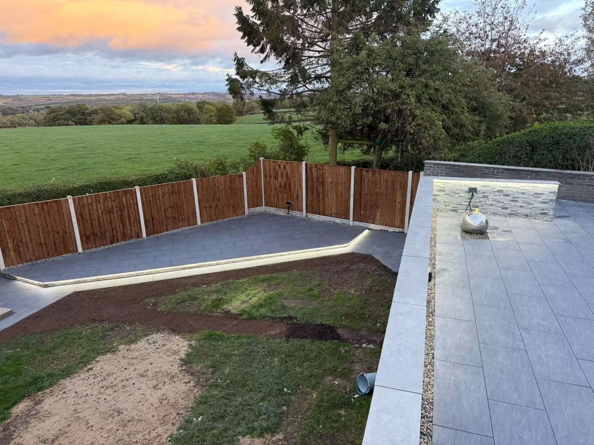

Patios & paving
Patio and garden paving enquiries in Clowne and surrounding areas. Explore J Hopes project photographs and call 07580 395057 for a free quote.
Explore this service →
CLOWNE · CONSTRUCTION & LANDSCAPING
Garden fencing and boundary improvement enquiries in Clowne and surrounding areas. Contact J Hopes Construction & Landscaping on 07580 395057.
J HOPES · CLOWNE
A well-planned boundary can help a garden feel more complete. Explore fencing in our supplied photographs and discuss your preferred style, height and layout.
Share the length of the boundary, photographs and any access restrictions. Let us know whether you are replacing an existing fence or planning a new layout.
Get a free quote →CLOWNE & SURROUNDING AREAS
Send your postcode with your enquiry so we can confirm availability and discuss your project. Include photographs, approximate dimensions and any access details.
Discuss your location →LET’S TALK ABOUT YOUR PROJECT
Contact us for a free, no-obligation quote. Tell us what you need, your postcode and the timing you have in mind.
Photographs, approximate measurements and any drawings help us understand the project. Add them to your WhatsApp message before sending.
WHAT WE DO
Explore the service you need and tell us about your project.
Patio and garden paving enquiries in Clowne and surrounding areas. Explore J Hopes project photographs and call 07580 395057 for a free quote.
Explore this service →Garden landscaping and outdoor improvement enquiries in Clowne and nearby areas. Free no-obligation quotes from J Hopes Construction & Landscaping.
Explore this service →Garden fencing and boundary improvement enquiries in Clowne and surrounding areas. Contact J Hopes Construction & Landscaping on 07580 395057.
Explore this service →Garden wall, raised border and outdoor step enquiries in Clowne. Discuss materials, levels and access with J Hopes Construction & Landscaping.
Explore this service →Construction, brickwork and blockwork enquiries in Clowne and nearby areas. Contact J Hopes to discuss project requirements and a free quote.
Explore this service →Outdoor living areas and landscaped seating spaces in Clowne. Discuss paving, pergola projects and garden improvements with J Hopes.
Explore this service →